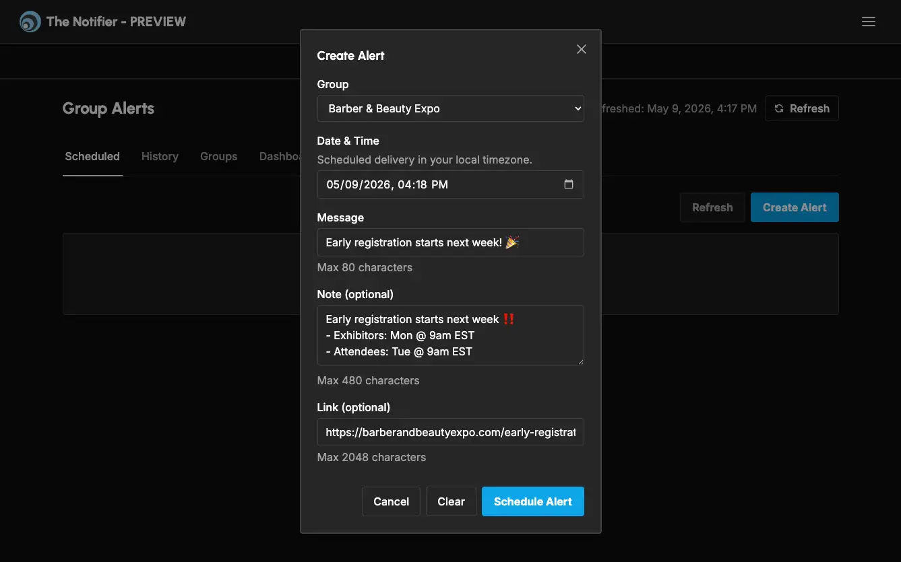
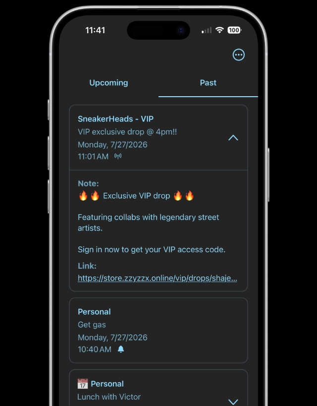

The Notifier
One platform. Web, mobile, and an alerting API.
The Notifier serves as a hub on their phone for personal alerts (alarms and local notifications) and external alerts (push notifications) and does it in a way that maintains user privacy without any user registration - it doesn't collect email, phone number or any personal identifiable information (PII). Users can create alerts with an alarm, note, link, repeat and calendar sync. A business can send a message to a group of phones or an individual phone - The Notifier delivers the message without compromising the user's PII.
The basic flow for external alerts is:
- Business shares the QR code or link for its alerts.
- Customer scans QR code or taps link on their phone, which opens the app so customer can confirm.
- Backend adds customer the to alert group using an app generated device ID and its push token.
- Business sends or schedules an alert from the SaaS.
- Cron runs every minute to send any alerts whose "send at" time has passed.
- For each alert, a push notification is created and sent to each active member in the alert group
- Alert lands on the customer's phone.
- The customer taps on the alert banner, which opens the app and shows the alert details.
Our privacy stance complicated system security:
- App uses device attestation, signed requests with keypairs, rate limiting, secure device storage (Keystore/Keychain).
- HMAC-SHA-256 of external IDs are used for individual messages to preserve user anonymity.
I work on the UI/UX for the mobile apps, website, SaaS, backend processing for alerts, data sync, in-app payments, stripe integration, and APIs.
I used Hemes Agent for outbound marketing: market research, search for prospects, scrape for contact info, rank prospects, create initial and follow-up emails. It used higher reasoning models (eg, GPT Sol) for planning and orchestration and lower reasoning/cheap models (eg. DeepSeek) for implementation and execution
My role Founder & hands-on developer, building with one other engineer.
- Astro websites and SvelteKit web applications.
- Expo apps for iOS and Android, including Swift and Kotlin native packages.
- Cloudflare services, PostgreSQL data, and WorkOS authentication.
- A custom WooCommerce plugin that connects stores to The Notifier.


TypeScript · Expo · Cloudflare Workers · PlanetScale PostgreSQL · SvelteKit · Astro
More of the stack
Runtime & data Workers, Containers, KV, D1, R2 / S3, PostgreSQL, SQLite, Hono, Drizzle ORM.
Product & integrations WorkOS, Resend, Stripe, Expo Push Notification Service, Tailwind, WordPress / WooCommerce, PHP.
Workflow tooling n8n, Firecrawl, Hermes Agent, Linear.